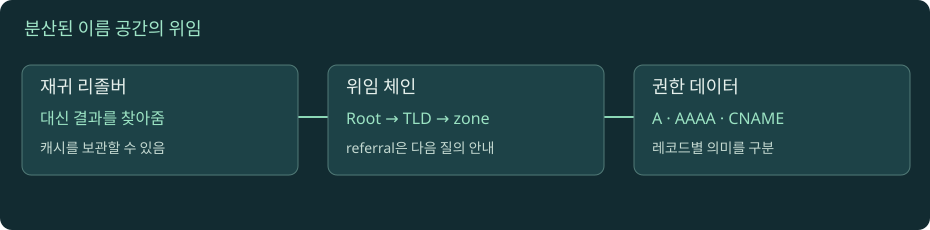

DNS: 이름에서 주소까지
주소록 하나를 읽는 일이 아니다. 서로 다른 조직이 관리하는 이름 공간을 위임받아 찾아가는 과정이다.

DNS 위임을 단계별로 따라가기
자바스크립트를 켜면 실험을 조작할 수 있습니다. 아래 본문·도식·실습은 그대로 읽을 수 있습니다.
01. 01 · URL에서 DNS가 맡는 부분
https://api.example.test:8443/orders?state=open을 보자. 스킴은 HTTPS, 호스트는 api.example.test, 포트는 8443, 경로는 /orders다. DNS의 기본 주소 조회는 호스트 이름에 대해 수행한다. 주문 경로나 로그인 쿠키를 보내서 서버를 고르는 과정이 아니다. 이 예시의 .test는 설명용 이름으로 공용 인터넷에서 조회되는 실습 주소가 아니다.
DNS 응답으로 주소를 얻어도 서버가 살아 있다는 보장은 없다. 이름은 올바르게 해석됐지만 해당 주소의 8443 포트에 서버가 없을 수 있다. 반대로 기존 연결이나 캐시가 있으면 새 DNS 조회 없이 요청할 수도 있다. 따라서 브라우저에서 페이지가 열렸다는 관찰만으로 이번 요청에서 DNS가 정상 작동했다고 단정하지 않는다.
질문을 둘로 나누자. 첫째, 어떤 주소를 받았는가? 둘째, 그 주소의 서비스에 실제로 연결할 수 있는가? 장애 분석에서 이 둘을 분리하면 DNS 담당자와 서버 담당자가 같은 증상을 서로 다른 의미로 설명하는 일을 줄인다. DNS는 서비스의 주소를 찾는 계층이며 서비스의 업무 상태를 검사하는 계층은 아니다.
02. 02 · 이름 공간과 zone은 같은 말이 아니다
DNS 이름은 오른쪽에서 왼쪽으로 구체화된다. api.dev.example.test.에서 끝의 점은 루트다. test 아래 example, 그 아래 dev, 다시 api라는 레이블이 이어진다. 파일 경로와 달리 점을 기준으로 오른쪽 부모를 따라간다. 끝의 점을 포함한 이름은 검색 접미사를 덧붙이지 않을 절대 이름이라는 의도를 표현할 때 유용하다.
도메인은 이름 트리의 특정 노드와 그 아래 이름 공간을 말한다. zone은 하나의 관리 주체가 권한 데이터를 제공하는 관리 단위다. example.test의 관리자가 dev.example.test를 다른 팀에 위임하면, dev 이하 이름은 하위 zone이 관리한다. 상위 zone 파일에 모든 자식 이름의 주소가 들어 있을 필요가 없다.
직접 작성한 사고 실험을 해보자. 본사 팀은 example.test를 관리하고 실험실 팀은 lab.example.test를 관리한다. 실험실이 서버를 추가할 때마다 본사에 모든 A 레코드 수정을 요청하면 조직이 커질수록 병목이 생긴다. 위임은 본사가 'lab의 권한 서버는 여기다'라는 연결점만 유지하도록 만든다. 이 구조는 중앙 서버 한 대가 전 세계 호스트 주소를 모두 보관하지 않아도 되는 이유다. 용어 구분은 RFC 9499 DNS Terminology를 참고한다.
03. 03 · stub, recursive resolver, authoritative server
애플리케이션은 보통 운영체제의 이름 해석 기능을 호출한다. 단말의 stub resolver는 복잡한 전체 탐색을 맡기기 위해 설정된 재귀 리졸버에 질의한다. 회사 DNS, 공유기가 전달하는 DNS, 통신사 DNS, 공용 DNS가 이 역할을 할 수 있다. 재귀 리졸버는 캐시를 확인하고 필요하면 여러 권한 서버를 따라간다.
권한 서버는 자신이 관리하는 zone의 답을 제공한다. 권한 서버는 일반 사용자의 모든 이름을 대신 끝까지 찾아주는 공개 재귀 서비스와 역할이 다르다. 한 소프트웨어가 두 역할을 구현할 수 있어도 운영상의 책임은 구분해야 한다. 'DNS 서버'라는 말만 쓰면 답을 보관한 쪽인지, 남의 답을 찾아 캐시한 쪽인지 알기 어렵다.
교육용 배치를 떠올리자. 노트북 → 회사 리졸버 → test 권한 서버 → example.test 권한 서버라는 경로가 있다. 노트북이 받은 답의 IP가 잘못됐을 때 회사 리졸버의 캐시가 오래됐을 수도 있고 example.test의 원본 데이터가 잘못됐을 수도 있다. 리졸버와 권한 서버를 각각 조회해야 두 가설을 구분할 수 있다. 권한 있는 답이라는 표시와 재귀 서비스 가능 표시는 서로 다른 질문에 대한 정보다.
04. 04 · 재귀 요청과 반복 탐색을 시간순으로 읽기
완전히 빈 캐시라는 단순화된 조건에서 api.example.test의 A 레코드를 찾는다고 하자. 단말은 리졸버에 최종 결과를 요청한다. 리졸버는 루트에 묻고 test의 권한 서버를 안내받는다. 다음으로 test에 묻고 example.test의 권한 서버를 안내받는다. 마지막 서버에서 실제 주소를 받으면 단말에 결과를 돌려준다.
이때 루트가 직접 test 서버를 호출하고 test가 다시 example 서버를 호출하는 식으로 그리면 흔한 실제 반복 탐색을 잘못 이해하게 된다. 리졸버가 다음 서버를 찾아가며 질의를 이어간다. 단말 입장에서는 '최종 답까지 구해 달라'는 재귀 요청이고, 리졸버가 위임 안내를 따라가는 과정은 반복 탐색이다. 프로토콜의 RD는 재귀 요청, RA는 재귀 서비스 제공 가능 여부와 관련된다. RFC 1034의 질의 처리 설명에서 역할을 확인할 수 있다.
실제 조회마다 루트부터 출발하지는 않는다. 리졸버는 부모 zone의 NS 정보나 목적지 주소를 이미 알고 있을 수 있다. 또한 질의 이름 최소화, 병렬 질의, 전달 리졸버 같은 구현 요소가 있으므로 이 순서를 모든 패킷의 고정 규칙으로 외우지 말자. 도식은 책임 경계를 이해하기 위한 기본 경로다.
05. 05 · NS만 있으면 주소를 어디서 얻을까: glue
상위 zone이 'example.test의 권한 서버는 ns1.example.test'라고 알려줬다고 하자. 리졸버가 ns1.example.test의 주소를 얻으려면 example.test를 알아야 하는데, 그곳으로 가려면 ns1.example.test의 주소가 필요하다. 순환 의존이 생긴다. 부모가 위임 안내와 함께 제공하는 주소 정보인 glue가 이 연결 고리를 풀어 준다.
예를 들어 상위 응답의 authority 영역에는 example.test. NS ns1.example.test.가 있고 additional 영역에는 ns1의 A 또는 AAAA가 있을 수 있다. 이 주소는 '내가 example.test의 모든 데이터를 대신 관리한다'는 뜻이 아니라 위임된 권한 서버에 도착하기 위한 연결 정보다. additional에 있는 모든 데이터가 같은 신뢰 범위를 갖는 것도 아니다.
직접 설계한 장애 예시를 보자. 운영자가 ns1 서버 주소를 바꿨지만 부모 쪽 glue는 그대로 뒀다. 관리자는 새 서버에 직접 질의하여 정상이라고 판단하지만 외부 리졸버는 낡은 연결 정보를 따라간다. 이때 자식 zone의 A만 확인하면 원인을 놓친다. 부모 위임, glue, 자식 권한 서버의 일관성을 함께 봐야 한다. 프로토콜의 referral 응답과 glue 포함 조건은 RFC 9471에서 정의한다.
06. 06 · A, AAAA, CNAME, MX, TXT를 다른 질문으로 보기
A는 IPv4 주소, AAAA는 IPv6 주소를 질의한다. 한 이름에 여러 주소가 있을 수 있고 A가 있어도 AAAA는 없을 수 있다. CNAME은 다른 이름을 가리키는 별칭이다. CNAME 자체가 웹 서버에 301 리다이렉트를 보내는 것은 아니다. 브라우저의 URL은 그대로여도 DNS 단계에서 다른 이름의 주소를 따라갈 수 있다.
MX는 메일 교환 서버, NS는 권한 서버, SOA는 zone 관리 정보, TXT는 텍스트 형태 데이터다. TXT를 조회했다고 웹 요청이 TXT 값으로 향하지는 않는다. 레코드 타입은 각 애플리케이션이 해석할 데이터의 의미를 나눈다. 레코드 형식은 RFC 1035에 정의된다.
교육용 연쇄 api.example.test → edge.vendor.test → 192.0.2.20를 생각하자. 첫째 이름의 별칭 TTL과 최종 주소 TTL은 별개다. 한 단계의 TTL만 낮춰도 나머지 캐시가 즉시 바뀌지는 않는다. 192.0.2.0/24는 문서용 예시 주소로 실제 접속 대상이 아니다. 또한 표준 CNAME의 일반 규칙상 같은 이름에 일반적인 다른 데이터가 공존할 수 없으므로 zone 최상위의 SOA·NS와 충돌하는 설계를 피해야 한다. 공급자의 ALIAS나 평탄화 기능은 표준 CNAME과 구분해서 읽는다.
07. 07 · DNS 메시지는 질문·답·위임·부가정보로 나뉜다
dig 출력은 한 덩어리의 문자열이 아니라 DNS 메시지의 관찰 창이다. QUESTION에는 질의 이름과 타입, ANSWER에는 답, AUTHORITY에는 권한 관련 정보, ADDITIONAL에는 부가 정보가 나온다. 응답의 상태와 플래그도 함께 읽어야 한다. ANSWER가 비어 있다는 사실 하나만으로 이름 자체가 없다고 결론 내리지 않는다.
예를 들어 AAAA를 물었을 때 주소 답이 없더라도 A가 존재할 수 있다. 반대로 SERVFAIL은 리졸버가 처리를 마치지 못했다는 신호라서 이름 부재와 다르다. 권한 서버가 응답했는지, 요청한 타입이 맞는지, NXDOMAIN인지 NOERROR인지 구분한다. 레코드 이름의 끝 점, 숫자로 표시된 TTL, IN 클래스도 출력의 서로 다른 열이다.
실습 기록은 '안 됨'보다 질의명 / 타입 / 사용한 리졸버 / 시간 / 상태 / 답 / TTL 순서로 남기자. 동료가 같은 명령을 실행해도 VPN이나 네트워크가 다르면 리졸버가 달라질 수 있다. 공개 사이트의 IP나 TTL을 교재의 고정 정답과 대조하지 말고, 응답 필드가 무엇을 뜻하는지 설명하는 것이 목표다.
08. 08 · DNS는 주소 발견, DNSSEC와 DoH는 서로 다른 보호
일반 DNS의 주소 응답만으로 웹 서버의 신원을 증명하지는 못한다. DNSSEC는 서명 체계를 통해 DNS 데이터의 출처 인증과 무결성 검증을 제공한다. DNSSEC가 질의 이름을 암호화하거나 목적지 웹 서버의 인증서를 대신 검증하는 것은 아니다. 검증 실패는 주소 부재와 달리 해석 과정의 보안 실패가 될 수 있다. RFC 4033은 이 보호 범위를 설명한다.
DoH는 DNS 메시지를 HTTPS로 전송한다. 이는 단말과 선택된 DoH 리졸버 사이 전송을 보호하는 방식이다. '아무도 DNS 질문을 모른다'는 뜻은 아니다. 리졸버는 질문을 처리하며, 브라우저의 DoH 설정에 따라 운영체제의 DNS 설정과 다른 경로를 사용할 수 있다. RFC 8484에서 DNS와 HTTP의 대응을 정의한다.
직접 비교해 보자. 회사 VPN에서는 내부 이름이 풀리는데 브라우저만 실패한다면 브라우저가 외부 리졸버를 사용하는지 확인할 가치가 있다. 반대로 주소는 정상인데 인증서 도메인이 다르면 TLS 단계로 이동해야 한다. DNS·DNSSEC·DoH·TLS를 모두 '보안 DNS'라는 말로 묶으면 어느 경계를 확인해야 하는지 사라진다. 각각 이름 데이터, 질의 전송, 서버 연결이라는 다른 대상을 다룬다.
실습 · 답을 받은 서버와 원본 데이터를 구분하기
macOS의 기본 터미널 또는 dig가 준비된 Linux에서 실행한다. Linux 최소 이미지에는 dig가 없을 수 있다. 이 실습은 로컬 설정을 변경하지 않는 조회다. 공개 응답은 실행 시점과 네트워크에 따라 달라진다.
dig example.com A를 실행한다. QUESTION의 A, status, ANSWER, SERVER를 기록한다. SERVER는 일반적으로 이번 명령에 응답한 리졸버다. 웹 서비스의 IP와 혼동하지 않는다.dig example.com AAAA와dig example.com NS를 각각 실행한다. 같은 이름이어도 타입에 따라 질문과 답의 의미가 달라지는지 확인한다. 값의 개수는 고정 정답이 아니다.dig example.com A +noall +answer로 답만 표시한다. 주소 앞의 숫자가 TTL이다. 전체 출력과 비교해 간결한 출력에서 사라진 상태·서버 정보도 확인한다.dig example.com A +trace를 실행한다. 가능한 환경에서는 위임 경로가 나온다. 이것은 로컬 도구가 반복 질의를 수행하는 별도 관찰이며 평소 애플리케이션의 질의를 캡처한 기록이 아니다. 직접 외부 DNS 접속이 막힌 회사망에서는 실패할 수 있다.dig example.com SOA로 SOA의 관리 정보를 찾는다. NS와 SOA는 웹 서버 주소를 직접 답하는 A와 다른 데이터라는 점을 설명한다.- 관찰한 NS 호스트명을
dig @<관찰한-NS-이름> example.com A +norecurse에 대입한다. 꺾쇠 부분은 실제 값으로 교체한다. 권한 서버 직접 질의와 첫 번째 리졸버 질의를 비교한다. 권한 응답에서는 aa 플래그를 확인한다. - 한 장의 그림에 단말, 리졸버, 부모 권한 서버, 최종 권한 서버를 그린다. 어디가 최종 주소를 관리하고 어디가 캐시하는지 표시한다. 이것을 설명할 수 있으면 실습을 마친다.
명령의 옵션 동작은 BIND의 dig 매뉴얼을 참고한다. 인터넷 방화벽으로 +trace만 실패한 결과를 '도메인의 DNS 장애'로 기록하지 않는다.
로컬 실습 서버 실행과 공통 명령은 실습 안내에서 확인하세요. 실제 HTTPS·HTTP/2·HTTP/3 서버를 제공하는 실습은 아닙니다.
이해도 확인
선택 후 이유를 설명하고 정답을 확인하세요.
원전과 더 읽을 자료
표준과 공식 문서를 참고해 독립적으로 구성한 학습 설명입니다. 예시 결과와 시간은 명시한 경우를 제외하면 교육용입니다. 확인 기준: 2026-11-09.
진행률은 현재 브라우저에 저장됩니다. 파일 직접 열기와 HTTP 접속은 저장 공간이 다를 수 있습니다.